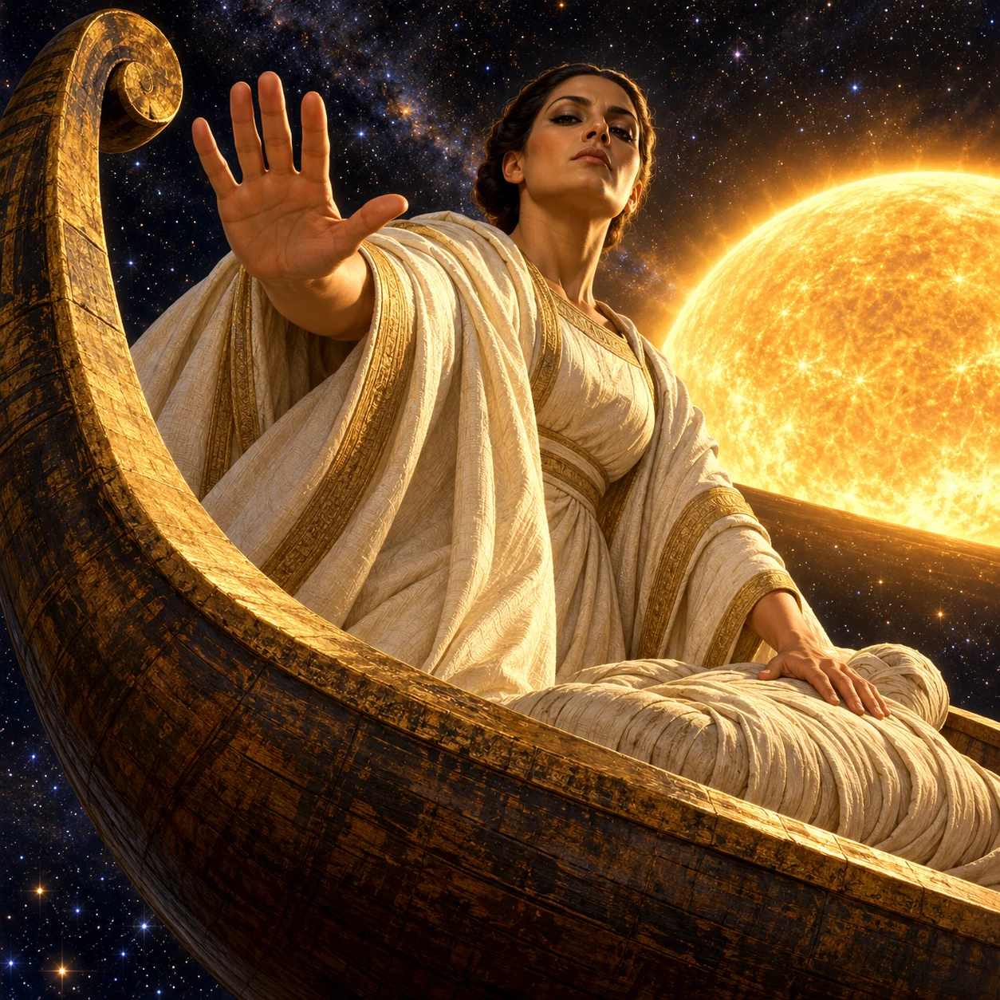
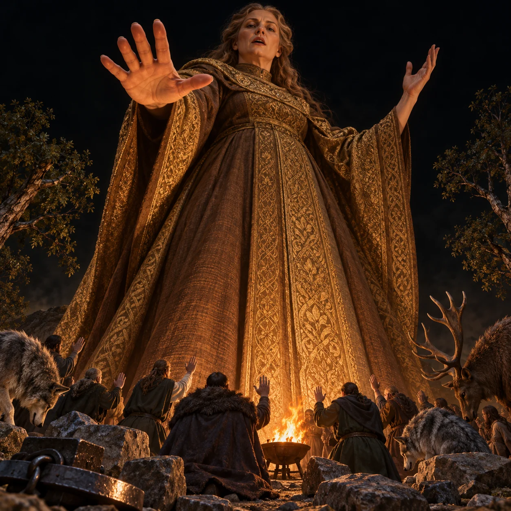
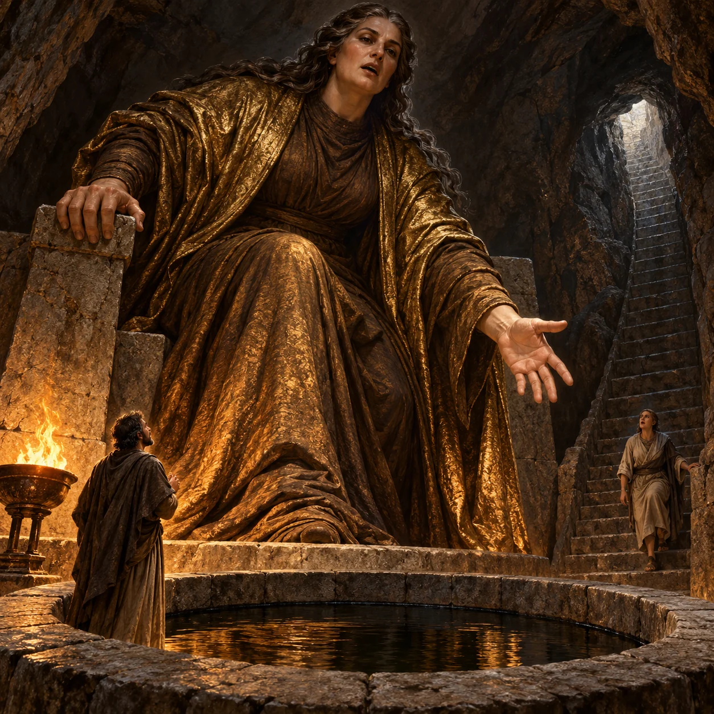

Tengri
Menunggu gambar yang lolos audit
3/11 lolos audit dan terpasang. Semua karakter dipilih dari entri dengan informasi lengkap. Ilustrasi adalah interpretasi artistik AI berdasarkan sumber riset.

Nephthys commands protection over a wrapped mummy with a barring palm from the solarbarque at creation.
Aura: The documented divine solarboat context (c15) and decisive protection of mummy (c03/c08), without an invented power effect.
Native and 200px both inspected. Plain female divine guardian dominates with commanding downward expression and active five-finger barring hand while other hand protects a fully covered mummy (c03/c08). Clear curved solarbarque beside Sun in creation starfield (c15) supplies unmistakable mythic context. Fully opaque robe, no wings/crown/weapon/glow, no readable text/watermark or borrowed design. All seven Sangar yes; cosmic staging is editorial, no giant body asserted.
Review sumberONE original square premium painterly cinematic Mitoloka illustration of NEPHTHYS, Egyptian divine protectress of the mummy in the SOLAR BARQUE AT CREATION. ANATOMY: ONE regal adult female goddess, ordinary humanlike form with one head, two natural eyes, TWO arms, TWO five-finger hands and two legs fully concealed by an immaculate, exquisitely woven, heavyweight opaque ivory ceremonial robe. Very broad unbroken structured cloth folds, sober antique-gold woven edging only, covered shoulders and chest, NO rags or shredded cloth. Hair precisely gathered behind her bare uncovered head. Plain female form and ceremonial fabric are editorial rendering of goddess identity, NOT sourced iconography. NO crown, headdress, wings, jewellery, animal head, staff or weapons. One fully linen-wrapped mummy lying in the solarbarque, no exposed dead flesh. [nephthys-c01, nephthys-c03] MOMENT: CLAIM and protect the dead; poised goddess thrusts one arm horizontally outward across the foreground with open five-finger palm toward the viewer, while her other palm is pressed firmly over the mummy. Upright shoulders, strong poised forward leaning torso, chin down, eyes looking sternly DOWN AT THE VIEWER with unyielding sacred authority. Mouth CLOSED, NO distress, screaming, sadness or pleading. An urgent deliberate protective intervention, never a passive seated pose. [nephthys-c03, nephthys-c08] POWER: Protection is represented solely by the commanding barring arm and hand on the mummy. No visible soul, ghost, magic energy or invented power. Her documented place in the BOAT OF THE SUN AT CREATION makes the divine context explicit. [nephthys-c03, nephthys-c15] SCALE & CAMERA: Dramatic extreme LOW view from outside the curved solarbarque hull. Goddess's head, broad ceremonial shoulders, upper torso and outstretched arm dominate two-thirds of frame. Wrapped mummy immediately below her palm, clearly secondary. HUGE CLOSE steep curved prow sweeps upward at left, lower rim crosses diagonal foreground. Camera creates dominance, NOT giant body size. No additional figures. LIGHT & WEATHER: ONE immense gold Sun low beyond the barque, actual distant solar body rather than a headdress or aura. Its side light sharply illuminates her stern facial planes, clean deep woven robe folds and boat's worn timber. Black cosmic twilight already holds distant stars. No glowing skin, luminous clothing or energy trails. SURFACE: Exquisitely woven fully opaque weighty ceremonial fabric, natural skin, bandaged mummy, aged warm-gold dark timber hull with unmistakable boat grain and a plain unlettered curled prow. Premium expressive oil-paint brushwork. SETTING: The SOLAR BOAT AT CREATION in twilight/early night; the entire lower background beneath the boat is cosmic dark and STARS, not an earthly ocean, river, bank or city. Editorial mythical celestial staging makes the documented solarboat at creation legible; do not invent any other object or her control over the sun. [nephthys-c15] MOOD: Commanding sacred divine guardian, severe reverent awe, monumental camera presence, immaculate dignity, overwhelming protective authority. Never an ordinary distressed woman or earthly boat passenger. Never evil, cute, decorative, calm or placid. HARD CONSTRAINTS: Native square PNG at least 1024x1024. No text, letters, glyphs, logos, borders, frame or watermark; no extra figures, heads, limbs or fingers; no copied film/game/anime/comic design; no nudity, transparent clothing or explicit gore; no generic glow aura, neon outlines or energy ribbons. No invented Egyptian emblem, wings, crown, sun-disk headdress or ankh. Claim labels never visible.

Monumental editorial allegory of Frigg receiving oaths from animate and inanimate categories across the Nine Realms.
Aura: Sovereign, monumental editorial rendering of the greatest goddess receiving universal protective oaths [frigg-c02,frigg-c10], no invented spell effects.
Inspected native 1254x1254 PNG and separate 200px thumbnail. All seven Sangar checks pass: Frigg dominates the full square in monumental greatest-goddess allegory; enlarged commanding open palm with five fingers, severe spoken decree and tiny raised oath hands establish active universal promise. Respectful sacred awe remains forceful at 200px. One head/two eyes/two arms, two legs concealed under opaque full gown; no extra limbs. Trees, lowered wolves/stag, inert stones/iron and ordinary brazier represent animate/inanimate categories of c10 without unsupported spell effects. No text, watermark, aura, nudity or gore. Giant compositional scale is explicitly editorial, not asserted sourced anatomy.
Review sumberONE original square premium painterly cinematic Mitoloka illustration of FRIGG, the greatest Norse goddess taking protective oaths from all things animate and inanimate across the Nine Realms. ANATOMY: One adult female goddess, one head, two eyes, two arms, two legs, five natural fingers on each hand. Fully opaque thick WALNUT ceremonial gown, high closed neckline, antique-gold mantle covering torso and legs. Natural severe dignified maternal face; no crown, no weapon, no spindle, no animal iconography attributed to her. [frigg-c01, frigg-c02] MOMENT: Command the universal protective promise with a broad OPEN PALM descending toward the oath gathering, opposite hand raised in solemn decree, mouth open as she speaks. Her enormous foreground palm and stern face look DOWN toward the viewer. Far below her, a semicircle of tiny fully clothed adult witnesses kneel and raise oath hands, ordinary wolves and a stag lower their heads. Among them are rough stones and forged iron pieces placed inward, a leaning tree at each side and one small ordinary brazier flame. All visibly attend her; Frigg is unmistakably the sovereign recipient rather than one member of a human gathering. [frigg-c10] POWER: Oaths from animate and inanimate things that they will not harm her son. Represent physical oath posture and spoken decree only: no destructive power, no levitation, no moving metal, no supernatural flame, no glowing runes. Fire, metal, stone, trees, people and beasts are illustrative examples of animate/inanimate categories, not a new magic mechanism. [frigg-c10] SCALE & CAMERA: extreme low ground-level view from within the oath gathering; Frigg fills 85 percent of the square from hem to stern head, towering visually above the tiny oath participants. Treat this MONUMENTAL DIVINE SCALE as an editorial allegory of greatest-goddess status and universal oath, not a claim of canonical giant size. Raised commanding hands loom nearer than her face. Entire full figure remains visible, she is no ordinary human-size woman. [frigg-c02,frigg-c10] LIGHT & WEATHER: one strong low warm light from the ordinary foreground brazier illuminates her severe face, open palm and vast woven mantle from below; deep black background, thin atmospheric haze but NO glowing aura or supernatural clouds. SURFACE: extremely tactile opaque woven cloth, bronze-gold thread catching firelight, natural mature skin, rough rocks, matte iron, bark and shaggy animal fur. SETTING: Unspecified dark terrain where she gathers oaths during her journey throughout the Nine Realms. No invented Fensalir palace or throne. Keep background minimal behind towering subject. [frigg-c10] MOOD: Respectful sacred awe, overwhelming royal maternal authority, all existence attending her protective decree; decisive and imposing, never ordinary woman at human scale, cute, calm social gathering, or evil monster. HARD CONSTRAINTS: no text, lettering, logo, border, frame or watermark; no extra heads, limbs or fingers; no film game anime comic designs; fully opaque clothing, no nudity or gore; no generic glow aura, neon outline, energy ribbons, magical particles, floating objects, invented crown, throne or prophecy image.

Monumental allegorical Titan deity rising from throne to lead oral recitation over sacred well and consultants in underground oracle.
Aura: Monumental editorial Titan representation presides over the sourced underground oracle, well and throne; authoritative recitation embodies memory [mnemosyne-c01,c03,c05,c09].
Viewed native 1254x1254 and actual200px. Monumental allegorical Titan fills cave over tiny adult standing CLOSE at throne foot, so divine composition survives thumbnail. Single humanlike female, natural hands, opaque cloth. Active oral declaration and extended authoritative hand; enormous throne, circular dark STILL-water sacred well and steep descending oracle stairs all distinct. Two ordinary adult consultants. No memory visions/glow, water control, text or invented attributes. All seven Sangar checks pass. Monumental stature is editorial sacred allegory per correction guidance, not source physical size claim.
Review sumberONE original square premium painterly cinematic Mitoloka illustration of MNEMOSYNE, Titan goddess personifying memory, ruling the underground oracle of Trophonios in Boiotia from her immense throne beside the sacred well. [mnemosyne-c01,mnemosyne-c05,mnemosyne-c09] ANATOMY: ONE living mature female Titan deity, one head two natural eyes two arms two legs and five fingers per hand. Humanlike anatomy, no crown or horns. Fully opaque high-neck walnut gown and massive heavy antique-gold mantle completely cover shoulders chest torso arms and legs. Her figure is drawn at MONUMENTAL ALLEGORICAL DEITY SCALE in this painterly sacred composition, not as an ordinary human woman; gigantic representation is editorial reverential symbolism, not a source claim of literal physical size. [mnemosyne-c01,mnemosyne-c07] MOMENT: RISE from the enormous plain stone throne and lean forward while DECLARING a remembered oral saga, mouth open in solemn recitation, stern compassionate eyes look downward toward viewer and tiny adult oracle consultants. One huge hand grips throne arm, other hand opens authoritatively toward the sacred well and the consultants; both hands are clear. She towers from oracle floor to cavern ceiling; her head, shoulders, whole cloth-covered torso and moving forearms dominate upper 75 percent of square. [mnemosyne-c03,mnemosyne-c05,mnemosyne-c09] POWER: Memory is embodied ONLY in active spoken recitation: TWO tiny fully clothed ADULT oracle consultants below her knee listen and repeat the story with open mouths and attentive raised faces, one emerges from the downward stone stairway toward the well. Her recitation directs attention physically toward the existing throne, well and underground descent. NO floating words, memory visions, magic glow, controlling water, spells, time effects or supernatural weather. [mnemosyne-c03,mnemosyne-c05,mnemosyne-c09] SCALE & CAMERA: EXTREME LOW WIDE camera at underground floor, looking up at the deity and entire broad throne. CLEAR monumental scale: an adult consultant only as tall as her hand stands CLOSE to her throne base, rather than far away in perspective. DEITY herself fills 75 percent square; no distant tiny goddess. Strong face silhouette and enormous plain throne readable at 200px. LARGE circular sacred stone WELL with visible black STILL WATER occupies lower center 20 percent, unmistakably a well, never a vague bowl. A clearly readable steep STONE STAIRCASE descends at right from a small high cavern opening to oracle floor below her throne, with second consultant walking down it. Cave depth supports the underground oracle, not an empty landscape. LIGHT & WEATHER: ONE low ordinary fire-lit brazier beside well, golden reflected light from STILL WATER illuminates her mantle, grave face and extended hands; deep walnut-black cave shadow, harsh rim and visible ordinary dust in the lamplight. Brazier is editorial scene light, not her divine attribute. No halo, no luminous eyes, no glowing well, no divine beams. SURFACE: visible painterly brushwork, dense heavy matte woven cloth, natural mature skin, worn rough uninscribed throne, thick well masonry, plain descending stone steps and dark still water. SETTING: subterranean oracle of Trophonios in Boiotia, her sacred well and throne clearly separate and legible. Simple rough-rock chamber, no palace towers or carved symbols. [mnemosyne-c05,mnemosyne-c09] MOOD: overwhelming sacred Titan authority, deeply awe-inspiring, reverent and active, never ordinary woman beside a well, casual human teacher, calm portrait or evil monster. HARD CONSTRAINTS: no text lettering logo border frame watermark; no extra heads eyes limbs fingers; no crown weapons invented iconography jewellery scrolls floating writing visions clocks stars or symbols; no borrowed movie game anime comic design; no nudity or gore; no generic glow aura neon outlines energy ribbons; no moving magic water or levitation. Goddess living and active, not statue. Throne, round sacred well and underground descent must ALL be legible.